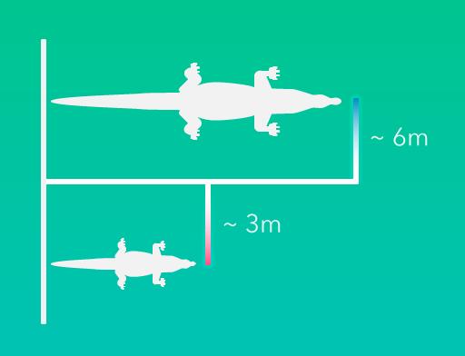
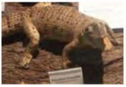
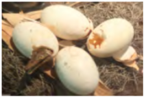
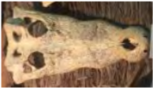
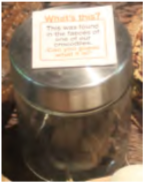
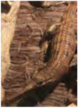
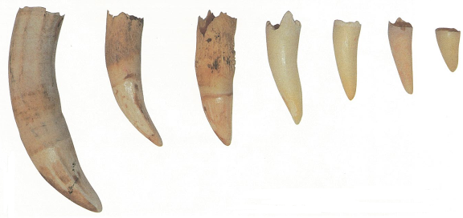

- Body structure designed for survival, not changed for last 200 million years.
- Have an elongated snout
- Eyes and nostrils set on top to allow them to have a good view above water, and breathe while body remains submerged
- Without being seen, they are able to ambush prey with a high success rate
- Able to open their mouth to snap at prey and prevent water from entering their windpipe at the same time. Done by closing a flap of cartilaginous flap (palatal valve) at the back of the throat
- Openings of nostrils and ears can be shut when underwater
- Apart from 2 movable eyelids, a 3rd transparent eyelid (nictitating membrane) helps to cover their eyes while underwater
- Long, muscular tail provides power to push forward when swimming
- ‘Tail walk’ – using powerful tail as a support to leap out of water to snatch birds
- Crocodilian movements include: swim, belly crawl, high walk, jump and gallop
Crocodilians have roamed the Earth for over 200 million years. They are more closely related to dinosaurs than other living creatures on Earth.Altogether there are 23 species of crocodilians, grouped into 3 families, found in North and South America, Africa, Asia and Australia.There are 14 species of Crocodylidae, 8 species of Alligatoridae (Alligators and Caimans) and only 1 specie of Gavialidae". Saltwater or Indopacific crocodile is not only the largest crocodilian but also the largest of all reptiles.
- Most caring parents among reptiles
- Mother crocodilians lay a clutch of 35 – 40 eggs each breeding season and guard their nests fiercely throughout incubation period of about 3 months
- After eggs hatch, remain with hatchlings for few weeks to few years (depending on species)
- Female Nile crocodiles use their teeth to crack unhatched eggs in order to free hatchlings within. Hatchlings remain with both parents for several weeks, using their backs as platforms for basking
- Female American alligator look after its young for up to 4 years! It is longest period of parental care for any crocodilians
- On average, at least 80% of eggs die during incubation and about 1% of hatchlings reach maturity as they fall prey to birds, fish and other adult crocodilians.
Unlike mammals, sex of crocodilians not determined after fertilization, but by incubation temperature. For crocodiles, intermediate temperatures produce males, low and high temperatures produce female hatchlings. Temperature of nest usually varies at different points, a mixture of male and female hatchlings are more common.

Nest tempreature of 32 ~ 33 Celsisus degree produces males, lower and higher temperatures produces females.
- Esturine crocodile is the largest crocodilians. Adult males can grow up to 6 metres, while adult females are smaller at 3 metres.
- Most crocodilians can stay underwater for over an hour. The record holder was an American alligator, which remained underwater for 6 hours and 5mins during an experiment conducted in 1925
- ‘Crocodile’ comes from the Greek word ‘krokodeilos’, which means lizard
- Crocodilians can snap their jaws with extreme force but the muscles for opening them are very weak. With crocodiles measuring 2metres or less, all you need is a rubber band to keep their mouths shut
- Crocodilians have the sharpest sense of hearing among reptiles, and they are the noisiest. American alligators produce the loudest bellows, which sound like a lion’s roar
- Crocodilians cannot chew. For large prey, they usually hold the victims in water till they drown and then tear off chunks of flesh by spinning, twisting and rolling over repeatedly. Sometimes, they would let parts of a carcass to rot in water before consuming it but that does not mean theyprefer rotting flesh

A comparison of body length between adult male and adult female for esturine crcodile.
By preying on weak, sickly and old animals, crocodilians help to keep prey populations healthy and maintain the balance of the ecosystem. However, they are both predators and prey of humans. Between 1950s – 1960s, crocodilians were killed in huge numbers for their skin (about 100 million hides were sold).
Many crocodilians species are critically endangered due to excessive hunting. Pollution, drowning in fishing nets and destruction of mangrove forests are also threats to their continued existence. Crocodile farms that harvest the crocodilians for meat and hides, combined with effective wildlife-protection efforts can take hunting pressure off wild populations.
As a general rule, alligators have a wider, more U-shaped snout while a crocodile has a slender, more V-shaped snout.
All crocodilians have dermal sensory receptors (ISO or Integumentary Sense Organ) on the upper jaw, lower jaw and head, but crocodiles have them all over their body. They may be more than one ISO per scale. The function is largely unknown, possibly to detect changes in pressure, salinity and presence of prey in murky waters
Crocodile
When a crocodile's mouth is shut, the forth and the largest tooth on the lower jaw can be seen. The fourth tooth on the lower jaw fits perfectly into the notch on the upper jaw.
Alligator
When an alligator's mouth is shut, the fourth tooth on each side of the lowerjaw cannot be seen. Generally, it has a broader snouth than the crocodile.
Alligators and caimans are closely related, and all species except the Chinese alligator are found in the Americas.
Indian gharial
A knob or "gharial" (meaning mud pot in Hindi) is found on the tip of the snout of mature males. It is used to produce buzzes and hisses to attract formales or ot warm rival males.
Indian gharials have the narrowest and longest snouts among crocodilians. The teeth are arranged to look like a "zipper"!
False gharial
The false gharial has an elongated snout but not as slender as the Indian Gharial. False gharial is highly endangered, and can be found in Thailand, Malaysia, Indonesia and Singapore Zoo.

Estuarine crocodile (stuffed)
- Also known as Indopacific or saltwater crocodile
- Able to survive in both salt and freshwater habitats
- To get rid of excess salt absorbed through its skin, secrete droplets of salty fluid through the salt glands on its tongue
- Found in Singapore
- Note ISO

Estuarine crocodile eggs with newborn crocodile
- Large clutches of 60 – 80 eggs are laid during the wet season
- Female digs young out of nest when they start their characteristic chirping sound, and helps them to the water by carrying them in her mouth
- Will guard nesting territory for about 2 – 3 years
- FCrocodilian eggs ‘talk’ to one another as the young animals tap from inside their shells. This form of communication may help them time their hatching together.

Estuarine crocodile skull (sub-adult)
- Largest of known living reptiles, adult males can grow over 6metres in length
- Learns by studying behavior – recognises a pattern when animals come to river to drink at the same time each day
- Crocodiles are hungry only about once every 2 weeks
- Crocodilian eggs ‘talk’ to one another as the young animals tap from inside their shells. This form of communication may help them time their hatching together.

Plastic bottle found in feces of one of Singapore Zoo crocodile
- Crocodilians eat anything, also swallow stones and other hard objects such as wood and nuts, believed to help break down the food in their stomach
- Some believe the stones function as ‘counterweights’ to balance their buoyancy in water
- Unfortunately they also swallow litter that we dump into rivers and ponds
- Pollution, drowning in fishing nets and destruction of mangrove forests and hunting are all threats to crocodilian populations

Indian Gharial (stuffed and upper skull)
- Male Indian gharials develop a bulbous knob at the tip of their snout at about 10 years old
- Knob known as ‘ghara’ or ‘mud pot’ in Hindi – gives rise to name of animal
- Cartilaginous ‘ghara’ eventually develops to form a ‘lid’ on the nostrils
- Known as fish-eating crocodiles, have the longest and narrowest snout compared to other crocodilians
- Observed to feed on human carcasses along Ganges River
- Threats: eggs collected by locals for medicinal properties. ‘ghara’ of adult males poached as aphrodisiac. Only about 200 wild gharials left despite reintroduction of 3,000 individuals.

Teeth
- Crocodilians replace their teeth constantly
- They produce about 3000 teeth within their lifetime